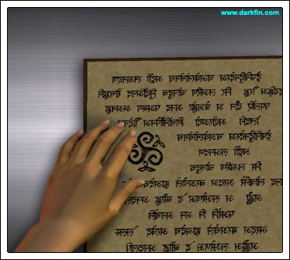
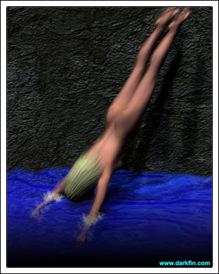
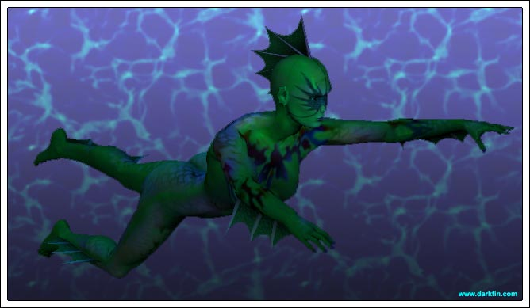
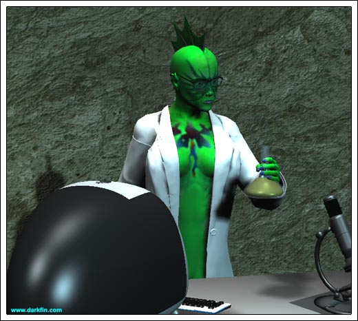

Deep inside the undersea caverns of Concha Dos Island, Dr. Erika von Meer works in her lair, conducting studies and restocking supplies. As she sets down a beaker and passes by a tank holding a Dorado fish, the scientist opens a wooden chest and lovingly regards a bracelet made of carved shells. She then takes out a large, aged book and flips through the pages written in an ancient text.
Erika (Sighing) How naive was I, Sam? - it was only a matter of time and now that time is here
She turns to a page that bears the same symbol as the one on the bottom of Morrigan's foot.

Erika And now I have more to protect than what was originally estimated
Slamming the book closed and returning it to the chest, Erika now focuses on an experiment. She writes up some notes and then takes out a mini tape recorder.
Erika (Speaking into it) The science behind the transmogrification is complex but not unfathomable... I wish I could say the same about the Nereidium
She glances over her shoulder at the trident leaning against a cave wall. Erika extends her hand and beckons it to her grasp where she twirls it around and practices a defensive maneuver.
Erika If I am to be victorious over this new enemy, I must be better prepared with better weapons... therefore, I am about to test a new capability
She hurls the trident into the water and hooks herself up to several monitors that record her vitals signs.
Erika My morphs have been stable enough now to consider additional synths... although I do not look forward to increased headaches and nausea
The lithe blonde takes a syringe and injects herself. Clinching her teeth and inhaling deeply, she feels a slow burn run up her arm and spread throughout her body. The monitors record the sudden fluctuation in her vitals. Moments later, she untangles the wires from her body and strips off the remainder of her clothes.
Erika How well this works depends on a number of factors... most of which will be under my control

Erika pauses the tape and sets some timers on her watch. Running up a cliff inside the cave, she dives off into the pool of seawater that leads out into Duquesa Bay. Her typical morph into Darkfin takes place in its usual pattern as she heads into deeper ocean waters. There, she emits a small, concussive wave that stuns the schools of fish surrounding her. She grabs a few of the fish and quickly devours them down to the bones.

Satisfied with the results, Darkfin returns to her lair, covers herself in her lab coat and promptly expels salt crystals out of her nostrils.
Darkfin (Slipping on her glasses) That wasn't too bad
The scientist resumes monitoring herself and writes up the notes.
Darkfin (Looking at a tank full of fish) Now comes the real test...
She emits another concussive wave through vocalization, stunning the fish in the tank and shattering a few of the glass tubes on her table.
Darkfin (Wincing and short of breath) YES... it worked... out of water... as well
The scientist resumes tape recording her thoughts.
Darkfin The sequence of low-frequency bangs or clicks... small sonic booms if you will... was highly effective in its first trial, far exceeding my original expectations - length and duration will need further study

She shuts off the tape recorder and checks the contents of a flask.
Darkfin (Half smirk) My detractors at Woods Hole would not be pleased
On her computer is a real-time feed of KCON's evening news broadcast. Morrigan McBride is seen interviewing Griffin Martel about the Pacific Coast Oil Consortium's annual meeting.
Darkfin (Studying the screen) But I still have a ways to go, Sammy... a long way
Suddenly, the green form falls to the ground and is overtaken by an epileptic seizure.
prev file = y2c01.html
next file = y2c03.html